Conceitos de Business Function e cache no JDE – Parte 1
Usar o cache, ou caching, é um dos conceitos fundamentais das aplicações web, ou, digamos, de qualquer aplicação, seja na camada de banco de dados, na camada de aplicação ou na camada web. No JD Edwards, o caching é feito na camada de aplicação, por meio de código, e na camada web, por meio do Server Manager (HTML Server).
Podemos examinar o caching baseado em código, que normalmente é feito por meio de Business Function (BSFN).
Sempre usamos ou vemos alguns parâmetros de business function que o JDE usa para comunicar ou passar informações
LPBHVRCOM
- Ponteiro para uma estrutura de dados usada na comunicação com as business functions
- Tem a capacidade de identificar a versão atual do software
- Identifica o privilégio de acesso do usuário atual
- Tem parâmetros que tratam a janela atual e os controles da janela
- Pode identificar o controle atual que está com o foco
- Identifica o momento atual do evento que está sendo processado
- Tem o componente de ID para o identificador global de tempo de execução do job executado a partir do menu driver
- Tem informações sobre as preferências do sistema
- Tem informações sobre as preferências do usuário
- Pode exibir o ID da mensagem de erro ou 0L
- Define o flag como TRUE ao alterar o comportamento do banco de dados
- Contém a chave de evento da mensagem de erro para as event rules
- Tem informações sobre o handle de ambiente para ODBC
- Contém ponteiros para a seção de RDA
- Tem a lista encadeada de erros para programas batch
- Armazena as informações de tempo de execução do formulário para FDA
- Tem um flag que indica chamada de runtime ou chamada de business function
- Armazena um flag que indica chamada remota ou objeto de chamada de terceiros
- Tem as informações de endereço de subscription/publish da aplicação
- Guarda o ID de processo lógico de quem chamou a API jdeLaunchUBEEx
- Contém também uma área de uso futuro para novos itens
LPVOID
- Ponteiro para uma estrutura de dados void, usada atualmente no processamento de erros
- Será usado para segurança no futuro.
Temos uma Master Business Function para a maioria dos processos que inserem dados em tabelas de transação. Cada master business function usa Begin Doc, Edit Line, Edit Doc e End Doc para inserir os registros nas tabelas.
Em termos simples, de leigo, abaixo está o uso de cada função, que é chamada em sequência para criar os registros.
| Nome da função | Uso |
|---|---|
| Begin Doc | Inicializa os caches de cabeçalho e de detalhe Adiciona ou atualiza o cabeçalho |
| Edit Line | Adiciona registro ao cache de detalhe |
| Edit Doc | Lê o cache de cabeçalho Atualiza o cache de cabeçalho |
| End Doc | Lê os registros dos caches de cabeçalho e de detalhe e grava nas tabelas |
| Clear Doc | Apaga o cache de cabeçalho Lê o cache de detalhe Apaga o cache de detalhe Encerra o cache |
O que é cache:
Cache é uma memória que contém informações usadas recentemente e pode ser acessada de forma extremamente rápida para manipular dados ao criar ou atualizar uma transação em uma aplicação.
Prós de usar cache:
- O cache melhora o desempenho da aplicação em que é usado.
- O cache reduz a carga nos servidores.
- Com o cache, podemos armazenar dados de várias tabelas e acessá-los quando necessário.
- O cache é útil no lugar de tabelas temporárias, reduzindo a carga nos servidores.
Contras de usar cache:
- O cache tem limitação de capacidade de armazenamento.
- Implementar cache exige conhecimento das APIs JDECACHE.
- Solucionar problemas da memória cache é difícil.
Algumas APIs de cache que usamos com frequência para criar o cache e usá-lo para armazenar e atualizar registros:
| Propósito | Comando |
|---|---|
| Conectar ao OneWorld | JDB_InitBhvr |
| Criar a definição da estrutura de dados do índice | Index.CacheKey[n].nOffset Index.CacheKey[n].nSize Index.CacheKey[n].idDataType |
| Inicializar o cache | jdeCacheInit |
| Adicionar um registro ao cache | jdeAddCache |
| Abrir um cursor no cache | jdeCacheOpenCursor |
| Qualquer manipulação do cache | Avançam o cursor: 👉 jdeCacheFetch 👉 jdeCacheFetchPosition 👉 jdeCacheResetCursor Não avançam o cursor: 👉 jdeCacheUpdate 👉 jdeCacheDelete |
| Fechar o cursor | jdeCacheCloseCursor |
| Encerrar o cache | jdeCacheTerminate |
| Liberar o behavior | JDB_FreeBhvr |
Conceitos de Business Function e cache no JDE – Parte 2
No nosso último artigo (parte 1), demos uma visão geral dos parâmetros padrão de uma Business Function e do uso das master business functions; também falamos sobre as APIs de cache e o seu uso.
Neste artigo, vamos demonstrar o processo de criação de um cache usando as APIs de cache e, no próximo artigo, veremos como usar esta BSFN para inserir/atualizar/buscar os dados no/do cache.
Passos para criar um cache
1. Criação da estrutura de dados
Crie uma estrutura de dados (data structure) para a Business Function.
Alguns parâmetros são obrigatórios na estrutura de dados para construir um cache, e os demais dependem do requisito.
- Cachename – Obrigatório
- ActionCode – Obrigatório
- Cursor – Obrigatório
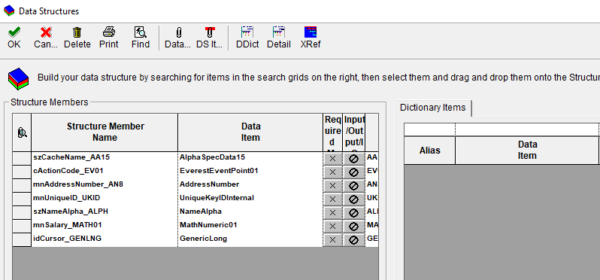
2. Associar a estrutura de dados à BSFN em C
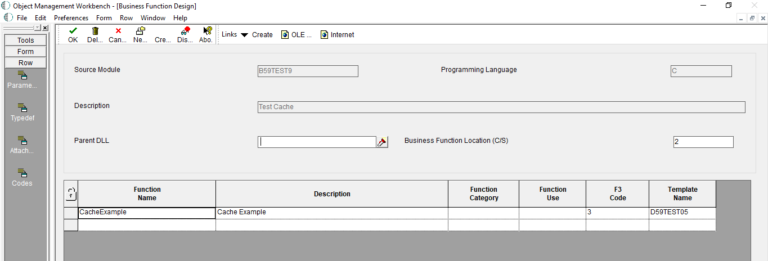
3. Gerar o esqueleto da Business Function
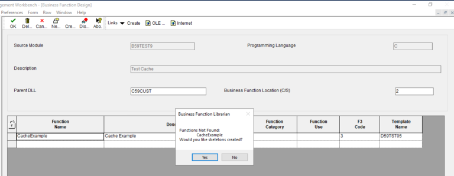
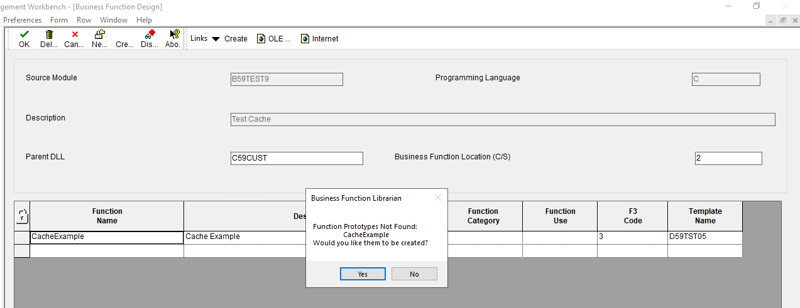
4. Criar a definição da estrutura de dados no arquivo .h
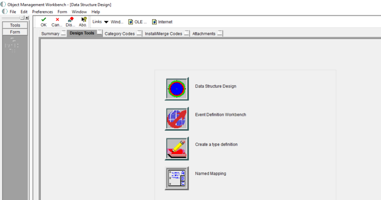
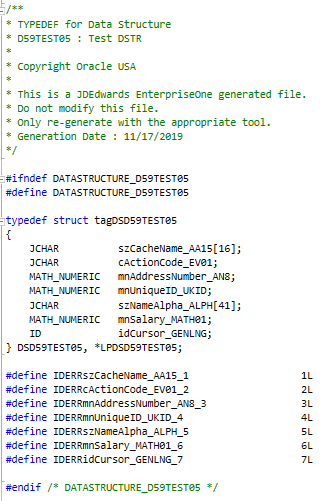
5. Definir a estrutura do cache no .h
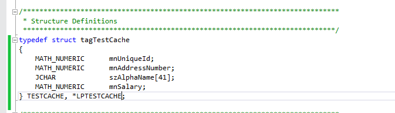
6. Definir a estrutura da chave do cache no arquivo .h
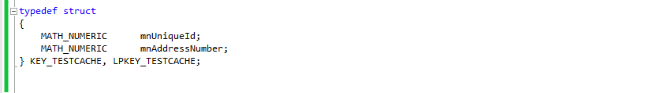
7. Criar as instâncias do cache e da chave do cache no arquivo .c
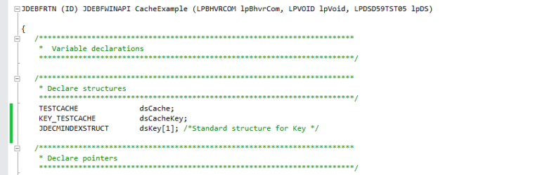
8. Declarar ponteiros e variáveis no arquivo .c
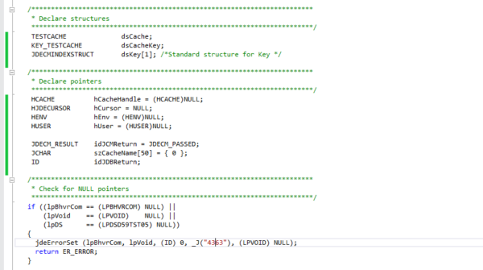
9. Inicializar o usuário
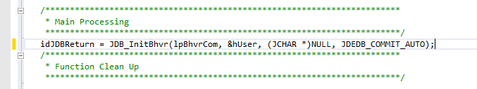
10. Inicializar o cache
O cache é inicializado com a API ‘jdeCacheInit’. Este é o passo mais importante para criar um cache.
‘jdeCacheInit’ inicializa um cache nomeado, associa o cache inicializado a um usuário e retorna um handle para o cache inicializado. Esta API contém quatro coisas:
- Cria um cache na memória.
- Cria um índice que será usado para acessar os registros no cache.
- Dá ao cache o nome passado nesta API.
- Associa o cache a um handle de cache (HCACHE), que o usuário usará para referenciar o cache nas chamadas às APIs do JDE Cache.
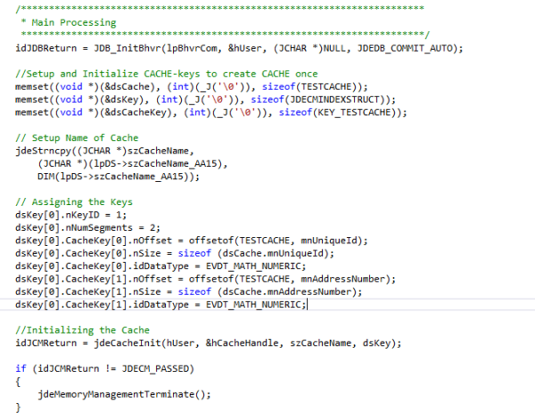
11. Processamento do cache
Na maior parte das vezes, o processamento do cache consiste em adicionar, atualizar, buscar e apagar no cache.
Alguns deles estão listados abaixo:
Adicionar/atualizar no cache
‘jdeCacheAdd’ adiciona um registro ao cache identificado pelo handle de cache hCache, obtido na chamada a ‘jdeCacheInit’.
‘jdeCacheUpdate’ atualiza, com os dados passados, o registro para o qual o HJDECURSOR passado aponta no momento.
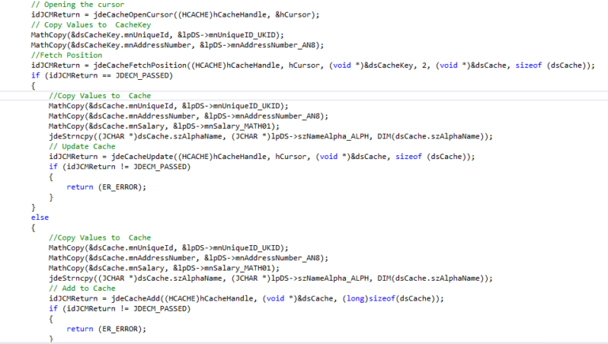
Busca única no cache
‘jdeCacheFetchPosition’ recupera o registro que corresponde à chave informada. Esta API pode ser usada para posicionar o HJDECURSOR em um local específico dentro do conjunto de dados. Quando for feita uma chamada a jdeCacheFetch, ela começará a buscar a partir da próxima posição. Isso é útil para fazer buscas sequenciais a partir de um local específico do cache.
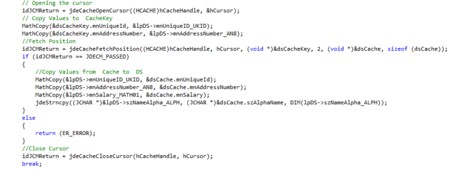
Busca múltipla no cache
A busca múltipla é possível por meio da API ‘JdeCacheFetch’. ‘JdeCacheFetch’ avança o cursor para o próximo registro do conjunto de dados, em relação à posição atual do cursor, e recupera o registro. Esta passa a ser a nova posição associada ao HJDECURSOR. Esta API não procura um registro no cache, mas busca qualquer registro que esteja depois do registro para o qual o HJDECURSOR passado aponta no momento. A API é ideal para fazer buscas sequenciais
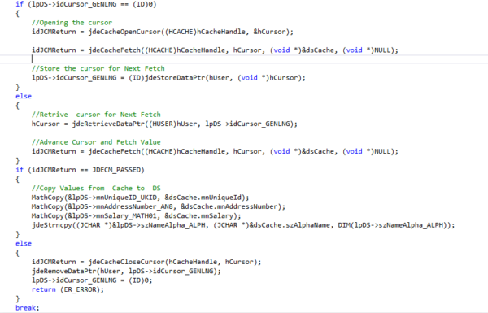
Apagar do cache
‘jdeCacheDelete’ é a API que apaga o registro apontado pelo cursor. Só é possível apagar um registro por vez.
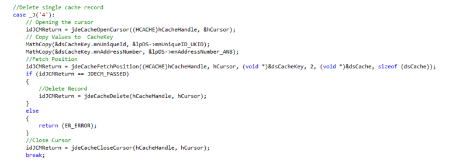
Encerrar o cache
Quando todo o processamento termina, a memória alocada para o cache deve ser destruída. ‘jdeCacheTerminateAll’ destrói todos os caches com o mesmo nome daquele com o hCache informado. Os caches são removidos fisicamente da memória.
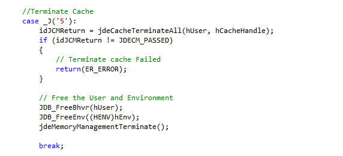
O código de exemplo (abaixo) para criar o cache é dado como referência.
Conceitos de Business Function e cache no JDE – Parte 3
No nosso último artigo (parte 2), demonstramos passo a passo o processo de criação da business function de cache usando as APIs de cache e explicamos o propósito das APIs de cache.
Neste artigo, veremos como usar a business function de cache em um objeto do JDE, como os valores serão armazenados no cache e como podemos manipulá-los.
Passos para usar a business function
1. Criar a aplicação para passar ou recuperar os valores, conforme abaixo
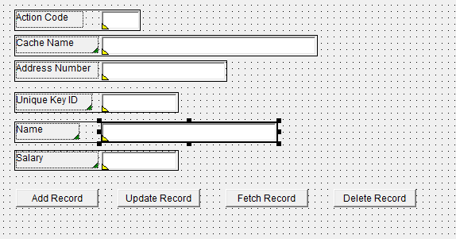
Valores do Action Code:
- Adicionar/atualizar
- Buscar pela chave
- Apagar do cache
2. No botão Add Record, chamar a BSFN em C para adicionar os registros ao cache
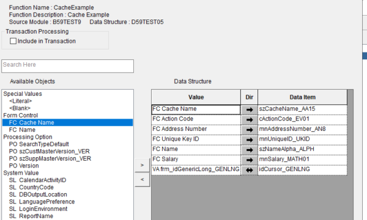
3. No botão Update Record, chamar a BSFN em C para atualizar os registros no cache
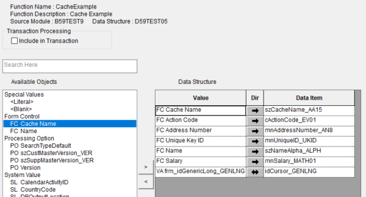
4. No botão Fetch Record, chamar a BSFN em C para buscar os registros no cache
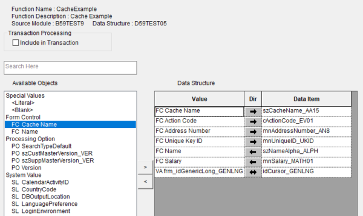
5. No botão Delete Record, chamar a BSFN em C para adicionar os registros do cache
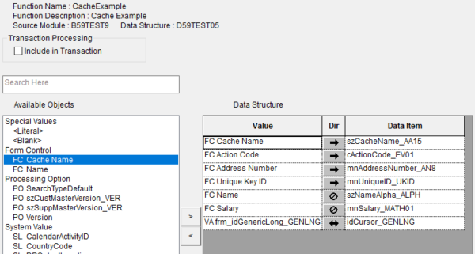
6. Executar a aplicação no web client, digitar os valores para inserir o registro no cache e pressionar o botão Add Record
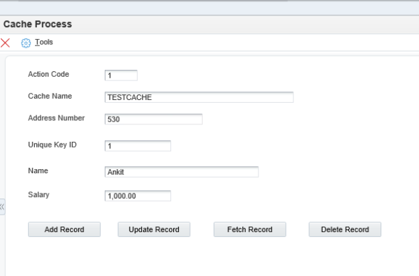
Podemos ver que os valores foram adicionados ao cache depois que a API jdeCacheAdd é chamada na BSFN em C
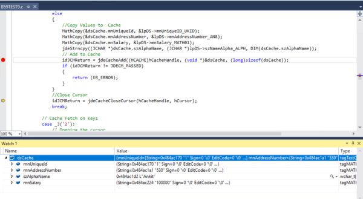
7. Digitar valores diferentes nos controles do formulário e pressionar novamente o botão Add Record para adicionar mais um registro ao cache
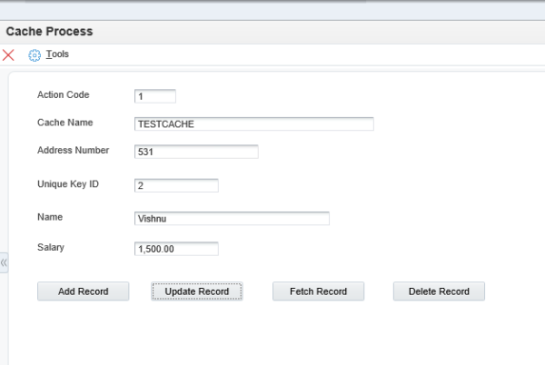
Podemos ver que os valores foram adicionados ao cache depois que a API jdeCacheAdd é chamada na BSFN em C
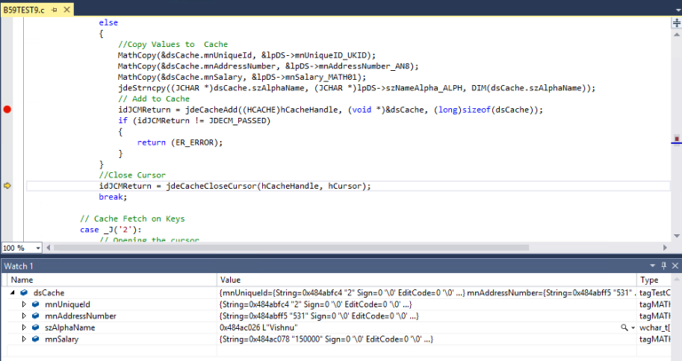
8. Digitar um valor diferente no controle do formulário para atualizar o primeiro registro do cache
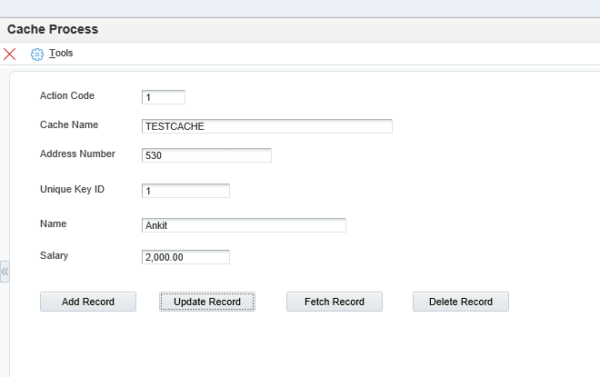
Neste caso, primeiro acontece uma busca no cache para verificar se o registro existe no cache; se o registro estiver lá, ele será atualizado no cache depois que a API jdeCacheUpdate for chamada na BSFN em C.
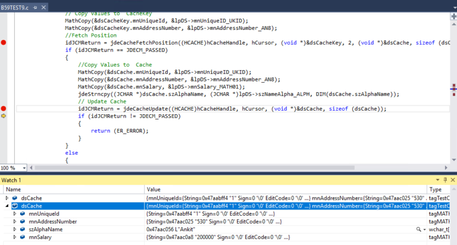
9. Digitar o valor da chave para buscar o registro no cache
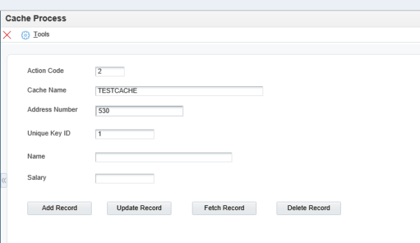
Também neste cenário, primeiro é feita uma busca para verificar a existência do registro e, se ele existir, os valores são atribuídos aos parâmetros da BSFN depois que a API jdeCacheFetchPosition retorna sucesso.
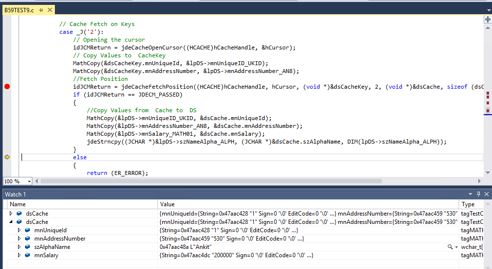
Os valores do primeiro registro foram exibidos na aplicação depois de pressionar o botão Fetch Record
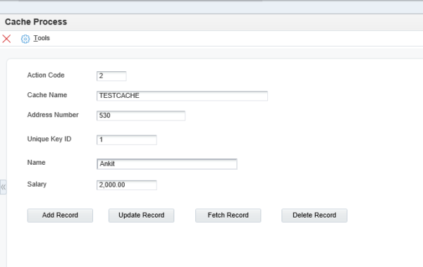
10. Digitar os valores da chave para apagar o registro do cache
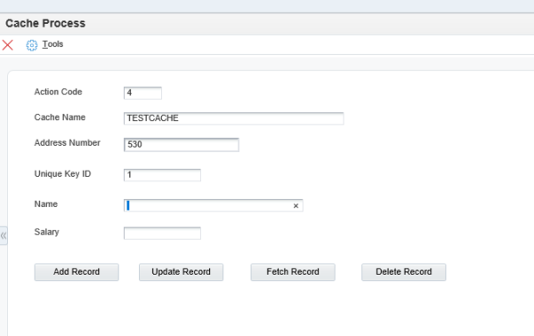
Também neste cenário, primeiro é feita uma busca para verificar a existência do registro e, se ele existir, os valores são apagados depois que a API jdeCacheDelete retorna sucesso.
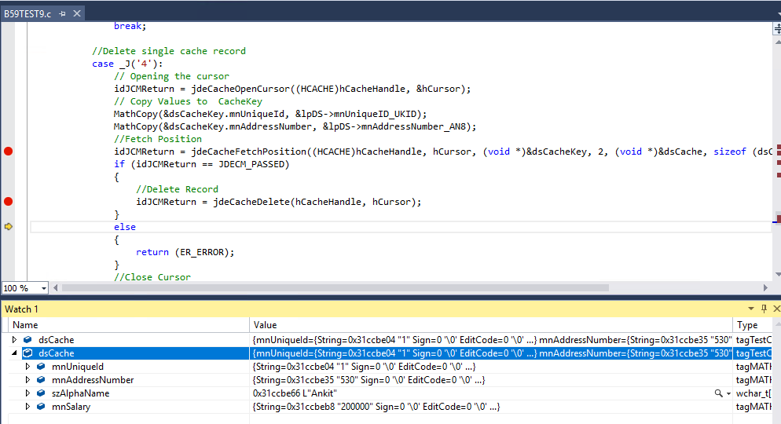
11. Ao tentar apagar novamente o mesmo registro do cache, é retornado um erro, porque o registro não está presente
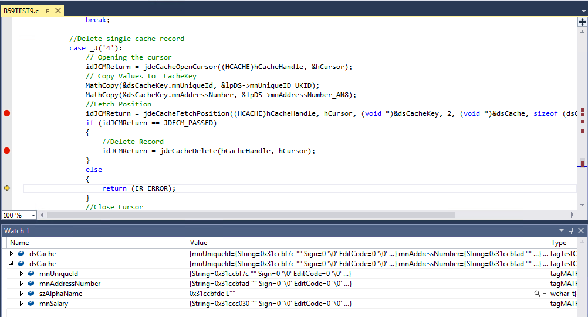
Da mesma forma, podemos chamar a BSFN em C para buscar os registros sequenciais do cache e destruir o cache.
Conceitos de cache no E1 – JDB Cache – Parte 1
Nos artigos anteriores, compartilhamos os conceitos do cache do JDE e a sua criação. O JDE tem dois tipos de cache; o que explicamos nos posts recentes é conhecido como User Cache ou JDECACHE.
Este artigo fala sobre o segundo tipo de cache que o JDE oferece aos seus usuários, chamado JDB F98613/ DB Cache.
Como sabemos, armazenar dados do banco de dados na memória do programa, em vez de buscá-los no banco, é conhecido como caching. Isso ajuda a eliminar o overhead do banco de dados.
O JDB Cache não é uma memória compartilhada acessada por todos os processos; é memória heap local de cada processo. Cada processo tem a sua própria cópia do DB cache.
O JDB cache é um recurso de mecanismo de caching automático de tabelas do EnterpriseOne.
Quando o processo termina, o JDB cache também vai embora com o processo, para o lixo (bit bucket).
O JDB Cache pode ser implementado por meio de código C em Business Function ou de Event Rules do JDE.
Não há replicação nem sincronização entre as instâncias do JDB cache.
Implementar o JDB cache pode ajudar a melhorar o desempenho do processo, desde que seja feito após uma análise completa.
O JDB cache é memória heap local do processo e está limitado a um total de 2GB em sistemas operacionais de 32 bits.
No próximo artigo, veremos como podemos implementar e quais são as condições para usar o JDB Cache no EnterpriseOne.
Referência:
- JDB cache in EnterpriseOne
- JDEdwards EnterpriseOne Applications Task Force
Conceitos de cache no E1 – JDB Cache – Parte 2
No último artigo (parte 1), compartilhamos o conceito do JDB cache e as suas características. Neste artigo, veremos como podemos implementar o JDB cache e usá-lo de forma eficiente diante dos nossos problemas de desempenho.
Como funciona
Quando uma tabela está configurada para fazer parte do JDB cache, assim que um registro é buscado na tabela, ele também é armazenado no cache, e os Selects seguintes do mesmo registro são buscados no cache em vez de no banco de dados.
Regras básicas
- Deve existir uma entrada na F98613, que é a lista de tabelas de cache, para a tabela.
- A tabela deve ser acessada usando a chave primária completa.
- A tabela deve ser acessada pela API ‘JDB_FetchKeyed’ em Business Function C ou usando a operação de I/O de tabela ‘Fetch Single’ nas event rules do JDE.
- APIs como JDB_SetSelection ou JDB_SetSequencing não devem ser chamadas ao usar o JDB cache.
- Não há sincronização / replicação entre processos.
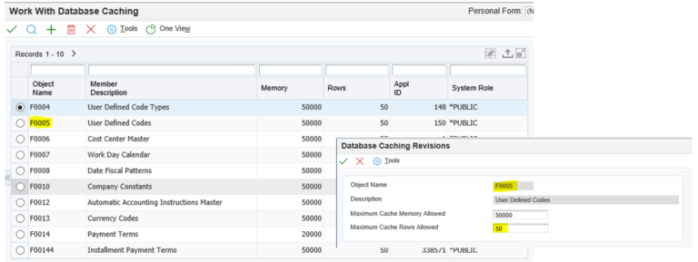
Funciona da seguinte maneira:
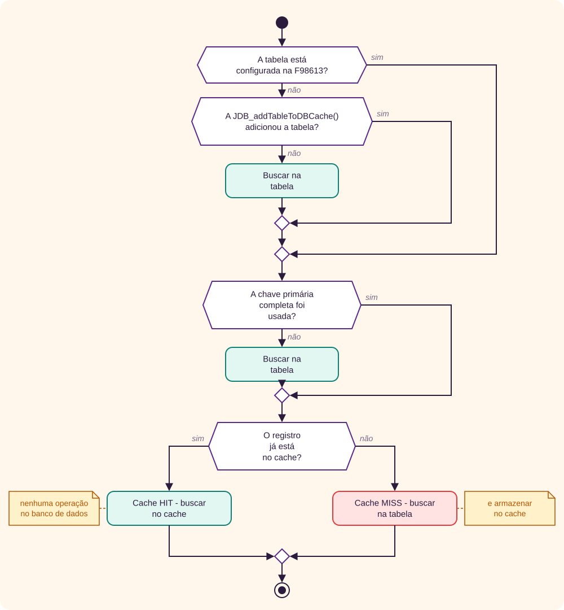
Limitações
- As tabelas devem ser estáticas.
- Os mesmos registros devem ser buscados repetidamente.
- Fazer cache de tabelas dinâmicas fará as aplicações falharem.
- Consultas que retornam zero linha não serão armazenadas em cache.
- Não é recomendado fazer cache de tabelas com milhões de registros.
Benefícios
- Um recurso de mecanismo de caching automático de tabelas do EnterpriseOne.
- Adequado para tabelas que permanecem constantes e estáticas.
- Pode ajudar a aumentar o desempenho do processo.
- Comandos Select redundantes sobre a mesma chave primária podem ser eliminados usando o JDB cache.
Referência:
- JDB cache in EnterpriseOne
- JDEdwards EnterpriseOne Applications Task Force